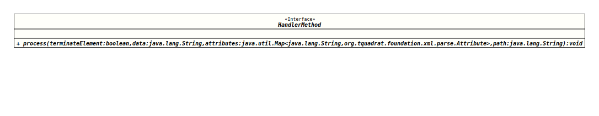

Module org.tquadrat.foundation.xml
Interface AdvancedContentHandler.HandlerMethod
- Enclosing class:
- AdvancedContentHandler
- Functional Interface:
- This is a functional interface and can therefore be used as the assignment target for a lambda expression or method reference.
@FunctionalInterface
@ClassVersion(sourceVersion="$Id: AdvancedContentHandler.java 1071 2023-09-30 01:49:32Z tquadrat $")
@API(status=MAINTAINED,
since="0.1.0")
protected static interface AdvancedContentHandler.HandlerMethod
The functional interface describing a method that processes an XML
element.
- Author:
- Thomas Thrien (thomas.thrien@tquadrat.org)
- Version:
- $Id: AdvancedContentHandler.java 1071 2023-09-30 01:49:32Z tquadrat $
- Since:
- 0.1.0
- UML Diagram
-

UML Diagram for "org.tquadrat.foundation.xml.parse.AdvancedContentHandler.HandlerMethod"
{kind=link}
-
Method Summary
-
Method Details
-
process
void process(boolean terminateElement, String data, Map<String, Attribute> attributes, String path) throws SAXExceptionProcesses an XML element.
As each element should have its own handler, the tag is not provided as an argument. If necessary, the tag can be derived from thepathargument.- Parameters:
terminateElement-trueif called byAdvancedContentHandler.processElement(String, String, Map, String), indicating that the element processing will be terminated,falsewhen called byAdvancedContentHandler.openElement(String, Map, String).data- The element data; will benullif called byAdvancedContentHandler.openElement(String, Map, String).attributes- The element attributes.path- The element path.- Throws:
SAXException- The element cannot be handled properly.- Since:
- 0.1.0
-